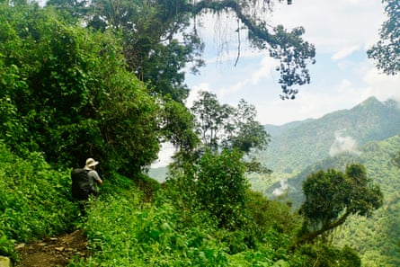
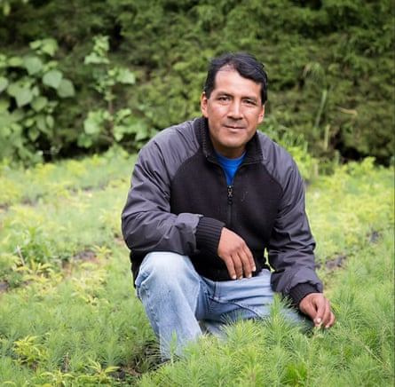
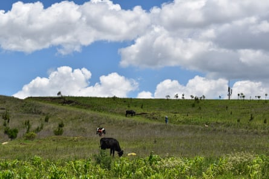
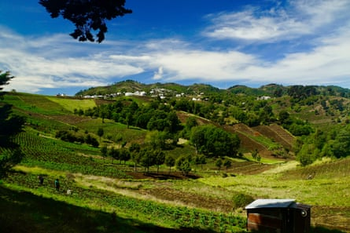
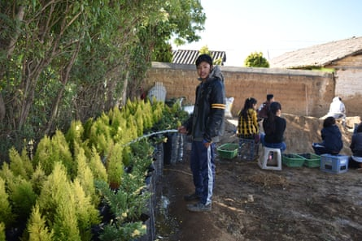
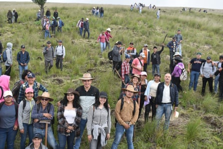
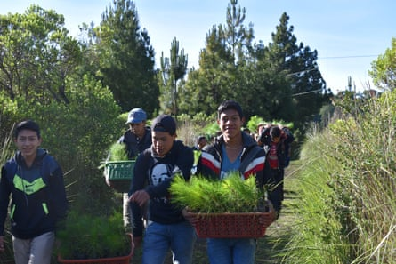

A rmando López Pocol is showing off some of the thousands of trees he has planted in Pachaj, his village in the highlands of western Guatemala , when he suddenly halts his white pickup truck. Alongside an American volunteer, Lyndon Hauge, he gazes out over a charred field. Clouds of smoke are still billowing from the ground.
As he walks through the ash-covered field, his optimistic speech turns to sadness and he pauses in silence to take in the barren landscape.
Before the fire, this 2-hectare (5-acre) plot of land in the mountains of Cantel was home to 2,000 trees, all planted through Pocol’s reforestation project.
Over a quarter of a century, he and his small team of volunteers and community members have planted thousands of trees, regenerating the landscape of Guatemala’s highlands and mitigating the impacts of the climate crisis, while also generating revenue for local communities.
A lush hillside on the south-east ridge of the Xecam range en route to Lake Atitlán.Photograph: Zach Mordan/Courtesy of Chico Mendes
Pocol initiated the Chico Mendes Reforestation Project in Pachaj – located 2,400 metres (7,900ft) above sea level and about 6 miles (10km) from the town of Quetzaltenango, known as Xela – in 1999. At that time, the region had suffered extensive deforestation over several decades.
The organisation was named after the Brazilian environmentalist Chico Mendes , who fought to preserve the rainforest and for Indigenous rights until he was murdered by a cattle rancher in 1988.
“The struggles he went through in Brazil are similar to the ones we go through in Guatemala,” Pocol says.
Armando López Pocol, who set up the Chico Mendes Reforestation Project in 1999.Photograph: Zach Mordan/Courtesy of Chico Mendes
“From the 1960s to the 1990s, there was a lot of deforestation in Cantel, as the wood was used extensively for building houses and as firewood for families,” he says. “I started Chico Mendes to stop the deforestation, as I was worried about climate change and environmental problems in Guatemala, with mining companies destroying the community forests of Indigenous people.”
He says deforestation is now largely caused by fires during the dry season, and attributes the latest one – the third in his fields so far this year – to an arson attack.
“We’re losing many tree plantations,” he says, adding that the region lost more than 100,000 trees to fires in 2023 alone. “What keeps my spirit alive are the workers and volunteers showing their support and not giving up.”
Since he embarked on his tree-planting mission, Pocol has become resigned to the fact that he cannot stop fires. “We just don’t have enough staff,” he admits. “It’s expensive to have people out here watching all this land.”
While he believes some of the fires are due to foul play, he says they have tried to reduce the number by creating fire corridors in the forests.
Smallholders and their livestock at a reforestation site in May, the start of Guatemala’s rainy season. Last year there was no rain until July.Photograph: Zach Mordan/Courtesy of Chico Mendes
Pocol says the organisation, using land owned by the local municipality, has planted between 5,000 and 20,000 trees every year since 1998. Over the last 10 years, this figure has risen to an annual average of 20,000 to 25,000, and it is anticipated that the figure will exceed 30,000 this year.
The organisation plants eight different types of trees, though he says he has found the most success with cypress and pine, which tend to flourish in the cooler climates found at higher altitudes.
“We plant pine trees because the earth here is very hot and we don’t have many other types of trees that live through the seasons,” he says, standing on a site where 1,000 pines and cypresses were planted about 10 years ago.
Pocol says environmentalists recommended a greater variety of trees, but adds: “They started to see that with the terrain and the dirt here, it just doesn’t work.”
E xperts indicate that the primary drivers of deforestation in the western highlands are logging for firewood and charcoal, as well as wildfires caused by campfires, slash-and-burn farming techniques, and conflicts between communities.
Pocol is also concerned about mining companies seeking to extract minerals and is constantly stressed about his organisation’s financial situation.
The Guatemalan government operates reforestation projects through Probosque , a state programme that supports reforestation and restoration by offering incentives for landowners to plant trees. While experts say that government projects have generally been effective, funding remains limited.
The village of Alaska, so named because of the altitude and often cold climate.Photograph: Zach Mordan/Courtesy of Chico Mendes
“There are many organisations and NGOs that receive support from these programmes, but it’s not enough. We need more,” says Dr René Zamora-Cristales, outgoing director of the Latin American restoration initiative 20x20 at the World Resources Institute and an associate professor at the Oregon State University college of forestry .
Zamora-Cristales says many environmental organisations struggle to meet the necessary regulations to access the programme, such as the requirement for a certain number of trees for each hectare. “You need to follow technical guidelines, and sometimes communities don’t want to follow them.”
Public subsidies may be available for environmental initiatives, but Pocol says his organisation has not received any money.
“We don’t receive funds from the government as we are against mining projects and environmental injustices in Guatemala, and we know that all the funds the government manages come from transnational companies.”
The Guatemalan government did not respond to requests for comment.
A Chico Mendes volunteer tending to young cyprus saplings on a cold January day. Pines also do well in the cooler climate at high altitude.Photograph: Zach Mordan/Courtesy of Chico Mendes
W ithout a regular income, the Chico Mendes project depends on donations and a “volunteering fee” (equivalent to about £15 a day), which covers a homestay and three meals. Volunteers gather seeds, source decomposed leaves, fill bags with soil, and plant trees.
Donations and the volunteering fee are crucial for Chico Mendes, as Pocol sees his initiative as much more than a reforestation project. The organisation also supports the community through ecotourism, with funds circulating through the local economy via homestays and treks, as well as volunteers spending money in the village.
Volunteers pose during a day of preparing a hillside in Cantel for replanting.Photograph: Zach Mordan/Courtesy of Chico Mendes
Chico Mendes facilitates Spanish lessons with 25 teachers from the local community and offers homestays with 30 families. “All the teachers through Chico Mendes are Indigenous women,” says Pocol. “We are creating opportunities for the community.”
New revenue streams are vital for local communities, as the region has increasingly been affected by the climate crisis. The rainy season in Guatemala usually lasts from May to October , but the Cantel area has experienced reduced rainfall in recent years .
“Some years, it only rains in two months,” says Pocol. “There wasn’t any rain from last May through to July last year. The corn was dying, and that has led to a radical increase in crop prices.”
Chico Mendes volunteers carry saplings for planting in thealtiplano, or highlands, near Quetzaltenango.Photograph: Zach Mordan/Courtesy of Chico Mendes
Dr Daniel Ariano, biodiversity coordinator at the University of the Valley of Guatemala’s centre for environmental studies and biodiversity, says projects such as Chico Mendes encourage mitigation and adaptation to climate risks. He notes that, in addition to drought, extreme weather events such as heavy rain also heighten the threat of landslides.
“This kind of project is extremely important, especially to promote the reforestation and restoration of ecosystems,” Ariano says. “We need to develop resilient communities in the highlands.”
Zamora-Cristales praises Pocol’s work and says Guatemala needs more people like him. “Deforestation has always been an issue, but different efforts, such as the one from Armando, have reduced the overall deforestation in the country. We certainly need more local leaders committed to improving the livelihoods of local communities by restoring nature,” he says.
Pocol, who works on his project every day without a break, including weekends, and tops up his income in the evenings as an Uber driver, admits he is exhausted.
“I wake up in the night and wonder what the future is going to be for the project as there’s been a lot of difficult times. But I’ve never given up, and it always lifts my spirits when volunteers come,” Pocol says.
“We all just want a green planet, so that all future children can have a clean environment, clean water, pure oxygen and food.”